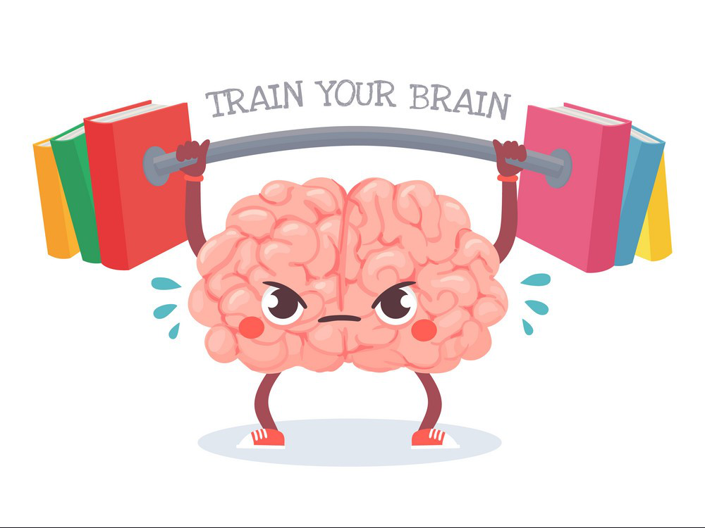

Learning new coding languages has always been easy and difficult for me because I only started coding programs the summer before my first year of college. The very first language that I got to learn was Python and it was amazing to me because of how easy it was to understand since the language was straightforward to read. After learning Python, the following languages that I acquired which were Java, C, and C++, came to me at ease since I was always able to learn by finding similarities between each language. The difficult part that came with learning these languages was following the different syntaxes that each language had. There was never an instance when doing homework or trying to complete a big project where I didn’t look something up to make sure I was doing it correctly. Learning how to import packages and files, and even reading about what different built-in packages did always took time and patience to understand. In the end, the one thing that I am thankful for is being able to start with Python as I feel that it is a very good beginning language to practice with.
Going into E07, I was expecting to be overwhelmed with how different Javascript was going to be compared to the other languages that I learned already. But, I was wrong and was able to thoroughly go through the coding camp without much difficulty. The reason for this is how similar Javascript was to Java. The only difference was that Javascript was able to do things differently than Java could. One of these things was that Javascript functions are called first-class objects which means that they could be assigned to variables, be returned from functions, and be passed to functions. Another small thing that I found interesting that Javascript had that no other language that I learned had was an operation called strict inequality.
From just being introduced to the Javascript language, the simplicity and easy-to-understand rules and syntax will make it a very beneficial programming language for software Engineers to use. Having no experience in software engineering, I feel that if a language is easy to read and understand Software engineers will be able to create, design, and maintain programs.
Coming from an athletic background, all my life I was told that “practice makes perfect” and I do believe that it is true. Playing football, basketball, and volleyball throughout my childhood and high school, I was always at practice and there were no excuses for missing practice, well other than being super sick or dying of course. Practice is what helps people grow in their skills and makes them a better player in whatever sport they play. It helps players to constantly remember things that they are supposed to and the moves or plays that they practice will, in the end, become second nature to them. This same mentality can also be applied specifically to athletic software engineering. Practicing your coding by constantly doing different exercises helps an engineer expand on their current knowledge and puts their skills to the test. An engineer needs practice such as the WODs as it will grow their skills as a programmer and in general, make them a better programmer. In Computer Science, there is never a moment to stop practicing because this field is constantly growing and advancing.